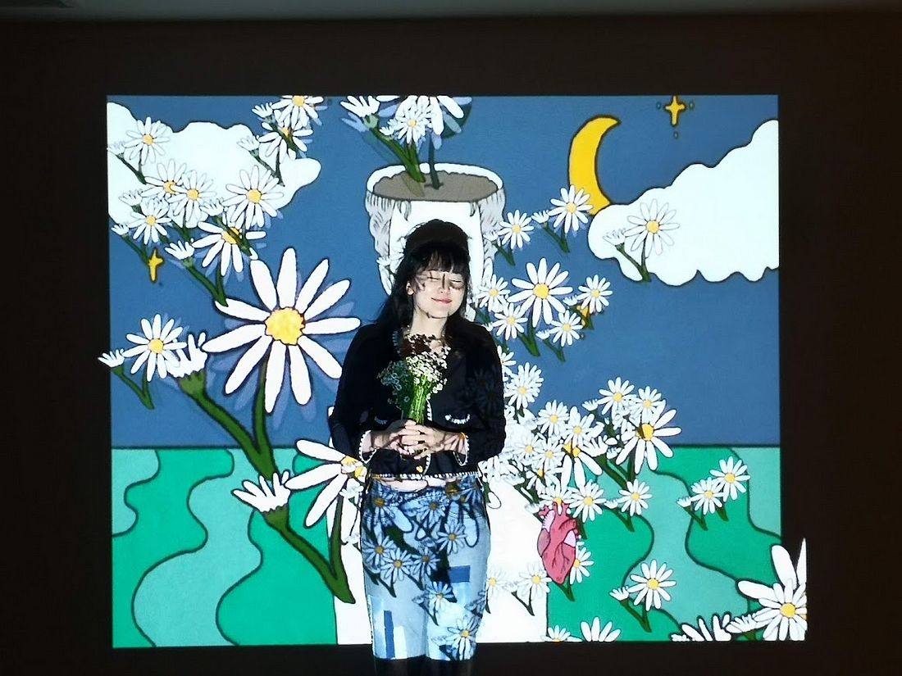
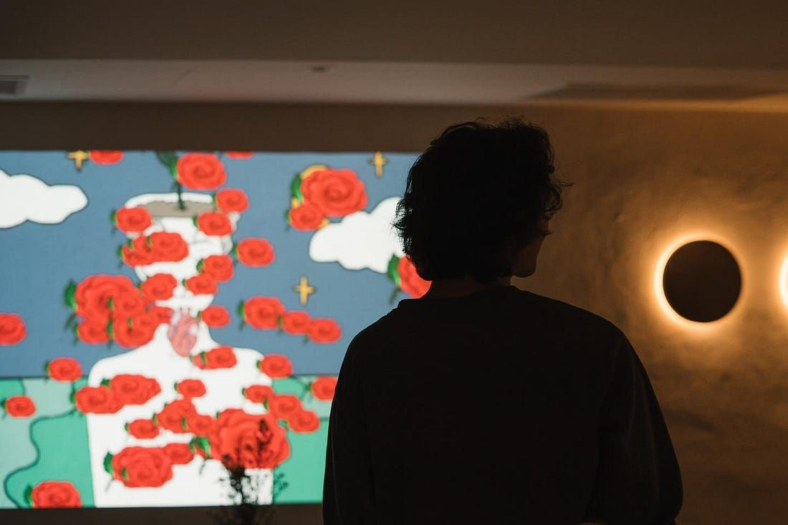

Digital drawings and generative animation fill a projected wall, and visitors who step in front of it become part of the visuals. A work about growth and individuality, shown at Chiang Mai Design Week 2020 and made with Napich Konruttanakul.
